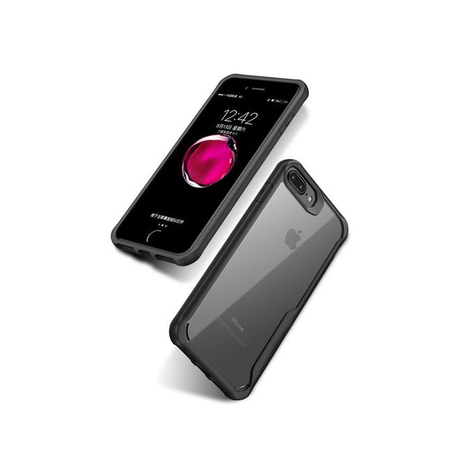

Top 2 des méthodes pour obtenir les couvertures d'album sur iTunes
 Boutique À propos Support Produit Fonctionnalités Guide Tech Specs Avis ESSAI GRATUIT ACHETER ESSAI GRATUIT ACHETER Produit Fonctionnalités Guide Tech Specs Avis ESSAI GRATUIT ACHETER ESSAI GRATUIT ACHETER
Boutique À propos Support Produit Fonctionnalités Guide Tech Specs Avis ESSAI GRATUIT ACHETER ESSAI GRATUIT ACHETER Produit Fonctionnalités Guide Tech Specs Avis ESSAI GRATUIT ACHETER ESSAI GRATUIT ACHETER
Top 2 des méthodes pour obtenir les couvertures d'album sur iTunes
Les couvertures d'album manquante sont un problème pour les perfectionistes comme moi qui veulent que leur bibliothèque de musique soit bien organisée. C'est un problème lorsque la moitié des titres n'ont pas de couverture d'album. Non seulement elles rendent la bibliothèque inesthétique et mal organisée. Il y a deux méthodes pour récupérer les couvertures manquantes sur iTunes : la méthode manuelle et la méthode automatique.
Partie 1. La méthode manuelle pour récupérer les couvertures sur iTunes Partie 2. La méthode automatique pour récupérer les couvertures sur iTunesPartie 1. La méthode manuelle pour récupérer les couvertures sur iTunes
Commençons par la méthode manuelle pour récupérer les couvertures sur iTunes.
Etape 1 Connectez vous sur l'iTunes Store en utilisant votre identifiant Apple. Si vous êtes déjà connecté, ouvrez simplement iTunes.
Etape 2 Sélectionnez tous vos fichiers audio en appuyant sur la touche Shift lorsque vous cliquez sur chaque fichier, ou en utilisant Ctrl+A.
Etape 3 Faire un clic droit et depuis le menu déroulant, sélectionner "Obtenir les couvertures d'albums".
Etape 4 Laissez faire, iTunes commencera automatiquement à rechercher les couvertures manquantes.
Une fois que le processus automatique est terminé, une notification vous en informe. Si par hasard une couverture n'a pas été récupérée (et il y a de grandes chances que cela arrive), vous serez aussi prévenu.
Vous pouvez ensuite suivre les étapes ci-dessous qui vous présentent la méthode pour récupérer manuellement les couvertures manquantes.
Etape 1 Rechercher les couvertures sur Google pour chacun des albums/titres.
Etape 2 Sauvegarder les images à l'endroit désiré sur votre ordinateur.
Etape 3 Ouvrir iTunes, et sélectionner les chansons pour lesquelles vous voulez ajouter une couverture et faire un clic droit sur la chanson et sélectionner "Obtenir des informations".
Etape 4 Un nouvel écran apparaît, aller sur l'onglet "Couvertures" et cliquer sur "Ajouter". Parcourez pour localiser l'image souhaitée et cliquer sur "Ouvrir". Cliquer sur "OK" pour ajouter la couverture au fichier sélectionné.
Inconvénients :
La récupération automatique n'arrive généralement pas à récupérer toutes les couvertures. Dans la récupération manuelle, vous devez rechercher chaque couverture vous-même, la sauvegarder sur votre ordinateur puis l'ajouter manuellement au fichier audio désiré.Partie 2. La méthode automatique pour récupérer les couvertures sur iTunes
Pour passer outre ces limites, nous avons une autre méthode pour obtenir les couvertures d'albums manquantes en utilisant “TunesGo”.
TunesGo est un gestionnaire simple et fun pour iTunes qui vous permet de gérer toutes vos données iTunes sur tous vos appareils (iPads, iPhones etc.) sans avoir à utiliser iTunes à chaque fois. De plus, il aide à organiser votre bibliothèque iTunes en scannant les couvertures manquantes, les titres manquants, les chansons en double, etc. et corrige automatiquement en un seul clic. Il peut aussi être utiliser pour sauvegarder vos données, gérer vos contacts et transférer des photos depuis un appareil Apple à un autre. Il est compatible avec Windows XP, Windows Vista, Windows 7, Windows 8, Windows 8.1, MAC OS X, iOs8 ainsi qu'avec les téléphones Android et Windows.
Essai Gratuit Essai GratuitEtape 1 Télécharger le logiciel TunesGo pour commencer. Connecter votre iPhone ou autre appareil sur l'ordinateur et TunesGo le détectera automatiquement.
Etape 2 Cliquer sur "Musique et sélectionner toute la musique pour laquelle vous voulez rechercher les couvertures. Faire un clic droit pour sélectionner "Réparer les informations musique" ce qui récupèrera les couvertures et réparera les informations ID3.
Nous pouvons maintenant comparer les trois processus présentés ci-dessus : la récupération automatique avec iTunes, la récupération manuelle avec iTunes et la récupération avec TunesGo. Il est évident que c'est cette dernière qui est la plus simple mais aussi la moins gourmande en temps. Vous voudrez peut-être aller plus loin et obtenir la version premium maintenant que vous avez vu à quel point TunesGo est efficace !
Astuces iTunes
1. Trucs & Astuces + 1.1 Accéler iTunes 1.2 Afficher les paroles de chansons 1.3 Partage de fichiers d’iTunes 1.4 Changer le thème iTunes 1.5 Partage à domicile iTunes 1.6 Importer iTunes sur Winamp 1.7 Changer la couverture EPUB via iTunes 1.8 Identifier les chansons iTunes 1.9 Partager de la musique sur iTunes 1.10 Copier la musique de l'iPod 1.11 Créer des sonneries iPhone 1.12 Déverrouiller l'iPod Touch 1.13 Réinitialisation de l'iPod 1.14 iTunes Music sur Nexus 1.15 Récupérer mot de passer iTunes oublié 2. Outils + 2.1 Visualiseurs gratuits d'iTunes 2.2 Plugins iTunes 2.3 iTunes Widgets paroles 2.4 iTunes Importateur de paroles 2.5 Equaliseur iTunes 2.6 iTunes mode veille 2.7 Editeur gratuit de Tag 2.8 Meilleures alternatives à iTunes 2.9 Alarme iTunes 2.10 iTunes Plugin Paroles 2.11 Alternatives SyncMate 2.12 Meilleur compagnon iTunes 2.13 Widgets iTunes 2.14 Importer de la musique 2.15 Meilleurs convertisseurs iTunes 3. Problèmes iTunes + 3.1 Problème de synchronisation de l'iPad 3.2 Problèmes communs avec iTunes 3.3 Synchroniser iTunes avec Android 3.4 Songbird vs iTunes 3.5 Mettre à jour iOS et iTunes 4. Autres + 4.1 Meilleurs films iTunes 4.2 Thèmes gratuits pour iTunes 4.3 iTunes Music vs. Apple Music 4.4 Obtenir les couvertures d'Albums 4.5 Icône iTunes 4.6 Scripts iTunes 4.7 Raccourcis claviers pour iTunes 4.8 Apple Music Festival 4.9 iTunes Radio VS PandoraApr 18,2017 18:06 pm / Publié par Axelle Petit vers Conseils iTunes
Suivre @AxellePT
Articles Populaires 3 Solutions pour l’oubli du mot de passe de sauvegarde iTunes Top 3 des minuteries de veille pour iTunes en 2016 Top 2 des méthodes pour obtenir les couvertures d'album sur iTunes Widgets de paroles iTunes pour Mac Comment importer de le musique depuis iTunes vers Final Cut Pro Comment copier de la musique de l'iPod vers iTunes Les 6 Meilleures méthodes en 2016 lorsque l'iPad ne synchronise pas avec iTunes En Consultez Plus En Consultez Moins Conseils iTunes Top 2 des méthodes pour obtenir les couvertures d'album sur iTunesTOUS LES SUJETS
TOUS LES SUJETS Transfert iPad Transfert iTunes Samsung Gestionnaire Android Conseils iTunes Transfert Android Transfert iPhone Astuces Android Sauvegarde Android Transfert de musique Deezer Photos iPad Photos de l'iPhone Contacts iPhone Bibliothèque iTunes Transfer iPodSimplifiez-vous la vie.
Produit
Outil de transfert iPhone / iPad / iPod Comment rooter Android Alternatives à iTunes Gestionnaire de bureau Android Transférer des photos de l'iPhone vers l'iPhoneSupport
Support En Ligne FAQs Guide Avis Contactez-nous Astuces Service de remboursementWondershare
MobileTrans Dr.Fone Data Recovery KeepVid ProSuivez-nous
Newsletter
Changer de région Copyright© Wondershare . Tous droits réservés. A propos de Wondershare Conditions Générales Politique de Confidentialité Politique de Cookies Top